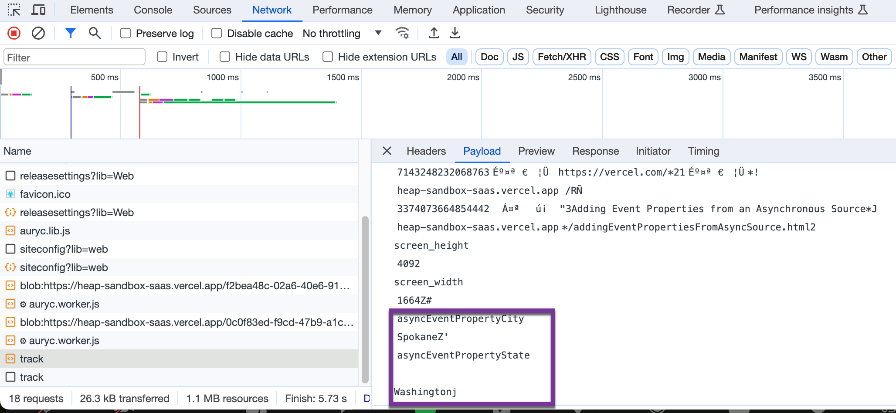

A Heap Adaptor can be utilized to wait for asynchronous data to load from a 3rd party location prior to sending the event to Heap. This example will:
1) Load the page
2) Wait 5 seconds while 3rd-party properties (asyncEventPropertyCity/asyncEventPropertyState) are retrieved from a mock API endpoint
3) Send the event data with the retrieved properties to Heap when 5 seconds have expired